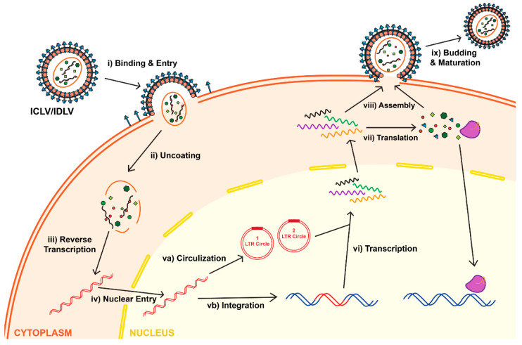
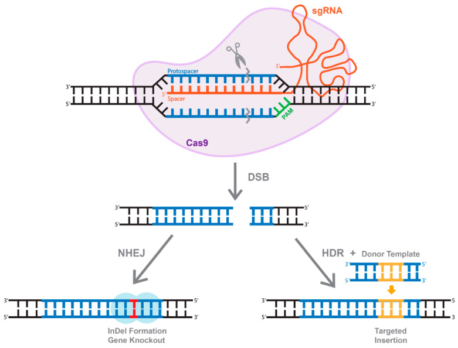

How I Became the Only One Left
I'm honestly still not entirely sure how I ended up being the only bioinformatician in the building. It wasn't a plan, and it wasn't a promotion in any sense that would look good on a slide. It was closer to being the last person standing when the music stopped.
When I joined, bioinformatics at the company was a two-person operation. Small, a little scrappy, mostly answering ad hoc questions for wet-lab scientists who needed a sequence analyzed or a primer checked. Over the next couple of years, it grew into a five-person group — enough people that we could specialize a little, enough that I got used to the idea of always having someone down the hall who spoke the same language I did: someone who knew what a FASTA file was without being told, who didn't need "coverage" explained to them, who could look at a piece of code I'd written and tell me, correctly, that I was overcomplicating it.
Then Thermo Fisher acquired Life Technologies. It's the kind of sentence that reads as a single, tidy clause in a corporate history and feels like absolutely nothing of the sort when you're living through it. Acquisitions of that size come with integration plans, redundancy reviews, and org charts redrawn by people who've never met the team they're redrawing. Almost overnight, the five-person group I'd come to rely on was gone. Not reorganized. Not merged into a bigger team somewhere else in the company. Gone. I was still there, still with a badge that worked and a desk that hadn't moved, and there was no one left beside me who did what I did.
I want to be honest about what that actually felt like, because the version of this story where I say "and then I rose to the occasion" skips over a very real period of just being unmoored. There's a specific kind of professional loneliness in being the only person in a large organization who can read the thing everyone else needs read. You can't casually ask a colleague to sanity-check your reasoning over coffee, because there is no colleague who does your kind of reasoning. Every mistake is caught by you, or it isn't caught at all until it shows up somewhere expensive. Every design decision is yours alone, not because you insisted on ownership, but because there was no one else in the room qualified to disagree with you.
What I didn't understand yet — what took me longer to learn than I'd like to admit — was that "no one else in the room qualified to disagree with you on the bioinformatics" is a very different statement from "no one else in the room who has anything useful to tell you." I had that backwards for longer than I should have. Correcting it is most of what this post is actually about.
Learning the Business Before the Biology
I came out of academia the way most people trained in computational biology do: fluent in the science, largely innocent of how a company actually decides what to fund. In a university lab, the currency is publications and grant renewals. Nobody in my graduate program ever sat me down and explained how a product roadmap gets prioritized, or why a perfectly good research idea can die quietly because it doesn't map to a revenue line anyone can point to.
So when I first landed in an industry role, I made a very specific and very common mistake: I treated every technically interesting problem as equally worth solving. I'd get excited about an elegant algorithmic improvement to something and not think once about whether it moved a number anyone in the building was being measured on. I couldn't understand, at first, why some of my ideas got immediate resourcing and others — ideas I genuinely thought were better science — went nowhere no matter how many times I brought them up.
It took real, deliberate effort to understand how the organization actually aligned itself: which products generated the revenue that funded everything else, which customer segments the sales and marketing teams were being held accountable for, what "the roadmap" meant as a living document rather than an abstract wishlist. I remember sitting in on a quarterly business review early on, mostly out of curiosity, and hearing a product line I'd never given much thought to described as the thing that funded three other teams' salaries, including mine indirectly. That reframed a lot for me. It's very different to walk past a product on a website versus understanding that it's load-bearing.
Once I understood that, something clicked that made almost everything after it easier. I stopped pitching ideas as "this is scientifically elegant" and started pitching them as "this closes a gap in a product our customers are already asking about" — which, encouragingly, was usually also true, once I bothered to check. It also changed how I listened in meetings. I started paying attention to which acronyms got repeated by the VPs, which customer complaints came up more than once, and which projects always seemed to get resourced no matter what else was competing for the same engineering time. None of that was written down anywhere. You had to sit in the room long enough to notice the pattern.
This wasn't cynicism about the science, and I don't think it should read that way. It was the opposite, actually: understanding the business gave me a much clearer read on which scientific problems were worth my limited time as the only person who could work on them. When you're a team of one, prioritization isn't a nice-to-have skill. It's the whole job, before you've written a line of code.
Walking Into the Lab
The other adjustment was more personal than professional, and honestly harder for me. I had to become a different kind of person at work — more talkative, more proactive about showing up in spaces I hadn't been invited to by default. Bioinformatics, especially when you're the only one doing it, can be an extremely solitary job if you let it be. You can sit at your desk, get tickets and requests routed to you electronically, produce results, and never actually see the biology you're supposedly supporting.
I made a decision, somewhere in that first stretch of being on my own, to stop letting that happen. I started walking into the lab. Not because anyone asked me to — nobody did — but because I'd started to suspect that the gap between what I understood on a screen and what was actually happening on a bench was bigger than I wanted it to be, and that gap was going to eventually show up as a bad design decision I couldn't see coming.
What actually hooked me, once I started, wasn't a sense of duty. It was how genuinely exciting it was to talk to people whose knowledge had almost zero overlap with mine. A molecular biologist running transfections all day had a completely different, completely valid, completely non-overlapping mental model of the same experiments I was analyzing data from. I'd ask what should have been an obvious question — why does this particular cell line behave badly with this particular reagent, why do we always see dropout at this step — and get an answer built from years of hands-on pattern recognition that no dataset I had access to could have taught me.
And I made a point of returning the favor. If I was going to walk into someone's lab space and ask them to explain their world to me, the least I could do was explain mine back — what a sequencing read actually was, why alignment isn't a solved problem, why "just check the database" is a much harder sentence to execute than it sounds. Some of the best working relationships I built in that period started as those small, mutual, slightly awkward tutorials. I was learning enough biology to stop being dangerous with it, and I like to think a few bench scientists came away with a slightly better intuition for what their bioinformatics colleague actually needed from them to do good work.
It changed the shape of my day, too. I stopped scheduling every conversation as a formal meeting with an agenda and started just being around — leaning against a bench during a slow incubation step, asking what someone was running and why. A surprising amount of the most useful information I ever got came out of those unstructured minutes, not the calendar invites. People will tell you, almost in passing, about the failure mode they've seen four times and never bothered writing up, because nobody ever asked.
A Script for Breaking DNA Into Pieces
One of the first genuinely useful things I built in that period came directly out of those lab conversations, and it's a good example of how unglamorous the actual value-creating work often is. Customers were ordering long custom DNA constructs — longer, in many cases, than could be synthesized reliably or affordably as a single piece. The synthesis chemistry has real limits on fragment length and on the kinds of repetitive or high-GC content it tolerates well. The practical solution the field had converged on was Golden Gate cloning: design your long sequence as a series of shorter fragments, each with carefully chosen overhangs at the junctions, synthesize the fragments independently, and then let a single-pot digestion-ligation reaction — using a Type IIS restriction enzyme that cuts outside its own recognition site — stitch them back together in the correct order, scarlessly, with no leftover enzyme site marking where the seams used to be.
Doing that by hand for every customer order was slow and error-prone. So I wrote a script that took a long input sequence and worked out, computationally, how to responsibly break it into synthesis-ready fragments: picking fragmentation points that avoided landing inside anything biologically important, checking that the resulting fragments didn't accidentally contain internal copies of the same Type IIS recognition site we were relying on for the assembly (which would have created extra, unwanted cut sites), designing unique four-base overhangs at each junction so the fragments could only reassemble in one correct order, and keeping every resulting piece inside the length window the synthesis pipeline could reliably produce.
It wasn't a sophisticated piece of software by any modern standard. There's no machine learning in it, no clever heuristic worth publishing. But it directly replaced a slow, manual, expert-dependent design step with something that ran in seconds and didn't make the kind of small transcription errors a tired human eye makes at 6 p.m. on a Friday. It's also the first time I really understood, viscerally, what "bioinformatics" meant for a company like this one: not research for its own sake, but writing the connective tissue between what a customer wants and what a wet lab can actually synthesize and assemble.
The TALEN Investment That Became Obsolete Overnight
Before CRISPR existed as a practical tool, the genome-editing technology everyone in the field was building around was TALENs — transcription activator-like effector nucleases. TALENs work by fusing a customizable DNA-binding domain, built from a chain of repeat modules where each module recognizes a single base, to a nuclease domain that cuts DNA once the whole assembly finds and binds its target. Getting a TALEN to work meant designing a bespoke array of these repeat modules for every new target sequence, and then physically cloning that array — a genuinely difficult molecular cloning problem, because the repeat modules are highly similar to each other and standard cloning methods struggle badly with highly repetitive DNA.
I spent a serious amount of time — a genuinely massive undertaking, by the standard of what one person can produce — understanding this system well enough to build design tools around it: software that could take a target sequence, work out a valid repeat-module architecture to bind it, and hand off a design that a wet-lab scientist could actually order and clone. It was intellectually satisfying work. It was also, in hindsight, standing on ground that was about to move.
CRISPR arrived, and within a remarkably short window, most of that TALEN investment stopped mattering. The core reason was structural, not just hype: a TALEN needs a bespoke protein re-engineered for every single new target, while a CRISPR system needs only a new twenty-base guide RNA sequence, which is trivial and cheap to synthesize, paired with the same Cas9 protein every time. CRISPR was modular in a way TALENs fundamentally weren't, and modularity is the kind of advantage that doesn't stay a research curiosity for long — it becomes the default within a couple of product cycles.
I won't pretend that transition didn't sting a little. Watching a body of work you understood deeply become largely irrelevant to where the field is actually going is a specific, humbling experience, and I think anyone who's worked in a fast-moving technical field long enough has a version of this story. But it also taught me something I've carried forward ever since: the domain expertise underneath the specific tool almost always survives the tool itself. Everything I'd learned about double-strand break repair, about NHEJ and HDR, about how a nuclease actually needs to find and cut a target in a genome full of look-alikes — none of that became obsolete. Only the specific protein-engineering mechanics of TALENs did. That distinction is what let me move fast when CRISPR showed up, instead of starting from zero.
Understanding CRISPR by Being in the Room
I don't think I could have built good CRISPR bioinformatics tools quickly if I'd only read the papers. What actually made the difference was hours spent in R&D meetings that weren't, strictly speaking, mine to attend, hours spent standing in the lab watching people run the actual biochemistry, and a lot of unglamorous conversations where I just asked people to explain things to me again, slower, in different words, until they stuck.
There's a version of learning CRISPR that's purely computational: you read that a twenty-base guide RNA directs a Cas9 protein to a matching genomic sequence immediately upstream of a short PAM motif, that Cas9 then makes a double-strand break, and that the cell repairs that break through error-prone non-homologous end joining or, given a donor template, through homology-directed repair. That's all true, and it's the kind of summary you could get from a single review article in an afternoon. But it's not the same as understanding why a guide RNA that looks perfect on paper sometimes just doesn't cut well in a real cell, or why chromatin accessibility at a locus matters as much as sequence complementarity, or what it actually looks like when an edit works partially, producing a mixed population of edited and unedited alleles that a purely computational read of the data can misinterpret if you don't know what you're looking at.
Being physically present for that gave me an intuition that no amount of reading would have. It made me a noticeably better bioinformatician for CRISPR specifically, not because the underlying computer science changed, but because I now understood which biological details actually mattered enough to model and which were noise I could safely simplify away. That's a judgment call, and judgment calls are exactly the thing you can't outsource to a paper.
I remember one specific R&D meeting, early on, where a scientist was troubleshooting a guide RNA that my tooling had ranked highly and that was nonetheless underperforming in cells. My first instinct, purely from the computational side, was to assume the off-target scoring was wrong. It wasn't. The actual issue turned out to be local chromatin structure at that locus in that particular cell line — something no sequence-only model could have flagged, because it isn't encoded in the sequence at all. I left that meeting and went back to the scoring pipeline with a very different question: not "is this guide a good sequence match," but "what else, beyond sequence, do I need to at least be aware of before I trust a ranking." I didn't have a clean computational answer for chromatin accessibility yet. But I stopped pretending sequence alone was the whole story, and that honesty made every design tool I built afterward more useful, even in the cases where I still couldn't model the missing piece directly.
From a Simple Design Tool to the Druggable Genome
The scope of what I was building for CRISPR grew in stages, each one triggered by a real need rather than a plan I'd mapped out in advance.
It started small: a simple internal design tool that let scientists paste in a target gene and get back candidate guide RNA sequences, scored for basic on-target and off-target quality. Useful, but limited — every request still required someone to run it and interpret the output by hand.
The next stage was building a pre-computed database of CRISPR guide RNAs targeting the human kinome — the roughly five hundred kinase genes that, because kinases are such a common and validated class of drug targets, were a natural first place to invest in ready-made, quality-scored reagents rather than designing them on demand every time someone asked. Once that database existed and proved useful, the obvious next question came from the commercial side almost immediately: what about GPCRs? G-protein-coupled receptors are an even larger gene family — on the order of eight hundred genes in the human genome — and an enormously important one for drug discovery, since a huge fraction of approved drugs work by targeting a GPCR.
Kinases, then GPCRs, and it wasn't long before the natural conclusion presented itself: why stop at two gene families when the same design pipeline could, in principle, cover the entire "druggable genome" — the several thousand genes the pharmaceutical industry considers realistically targetable by small molecules or biologics. So that became the next build: a genome-wide database of pre-designed, quality-scored CRISPR guide RNAs, engineered so that a researcher anywhere in a large drug-discovery organization could pull ready-to-order reagents for almost any gene they cared about, instead of waiting on a bespoke design request.
Scaling from a few hundred kinase targets to the entire druggable genome wasn't just a bigger version of the same problem — it forced the design pipeline itself to get more disciplined. When you're hand-checking a few dozen guide RNAs, a human can eyeball the off-target report and make a judgment call. At genome scale, that's not possible; the scoring, filtering, and QC logic all had to be codified into rules that ran unattended and still produced a result a scientist could trust without a human double-checking every single entry. That meant spending real time defining, precisely, what "good enough to ship" meant in computational terms — and going back to the same lab conversations that had taught me the biology in the first place to make sure those thresholds actually reflected what worked at the bench, not just what looked clean in a spreadsheet.
Then the questions from customers changed shape again. It wasn't just "give me a guide RNA" anymore — it was "if I use this specific guide RNA, will it actually produce a clean knockout, and what happens to the resulting protein?" That's a genuinely different, harder computational question. A cut that produces a frameshift early in a gene is very likely to knock it out completely. A cut near the very end of the coding sequence might leave a truncated but partially functional protein. A cut that happens to land in-frame at certain positions might not disrupt the protein at all. Answering that well for a non-expert user meant building visual tools that could take a proposed cut site, translate the predicted downstream consequences, and show a researcher — graphically, not as a wall of sequence — what was actually likely to happen to their protein of interest. That was my first real exposure to building user interfaces as a serious discipline in its own right, not an afterthought bolted onto a script: thinking about what a bench scientist with no bioinformatics training needed to see, in what order, to trust the answer enough to act on it.
Watching a Virus Do the Work
All of that groundwork — the design algorithms, the genome-wide databases, the visual outcome-prediction tools — eventually converged into a single product: what became the LentiArray™ CRISPR Knockout Library, recognized as a Top 10 Innovation of 2016 by The Scientist magazine. I want to spend some real time on this one, because I don't think I've ever stopped finding it fascinating, and because it's the clearest example in my career of biology and computation actually meeting in the middle.
The delivery mechanism is the part that still gets me. To get a CRISPR system into a human cell reliably, at scale, across a genome-wide library of different gene targets, you package the DNA encoding Cas9 and a guide RNA inside a lentivirus — a member of the same viral family as HIV, engineered to be safe, replication-incompetent, and to do exactly one useful thing: deliver its genetic cargo into a cell and integrate it into that cell's genome. The virus doesn't know or care that the cargo this time is a gene-editing system instead of its own native genes. It just does what lentiviruses do.
The life cycle, once you actually trace it step by step, is genuinely elegant. A viral particle binds a receptor on the target cell's surface and gets taken in. Once inside, it uncoats, releasing its RNA genome into the cytoplasm. Reverse transcriptase — an enzyme the virus carries with it — converts that single-stranded RNA into double-stranded DNA. That DNA is imported into the nucleus and, for an integrating vector, spliced directly into the host cell's own genome by the viral integrase, becoming a permanent, heritable part of the cell's DNA. From there, the cell's own transcription and translation machinery — the same machinery it uses for every other gene it owns — starts reading out Cas9 protein and the guide RNA, with no way to distinguish them from native genes.

Once Cas9 protein and guide RNA are both being expressed inside the cell, the actual editing event is the part most people picture when they hear "CRISPR": the guide RNA directs Cas9 to scan the genome for a matching sequence sitting just upstream of a short protospacer-adjacent motif, or PAM. When it finds a match, the guide RNA base-pairs with one strand of the target DNA, displacing the other strand, and Cas9 makes a clean double-strand cut at that exact position. The cell, treating this as ordinary DNA damage, repairs it — usually through non-homologous end joining, an error-prone pathway that frequently leaves behind small insertions or deletions right at the cut site. Land that indel inside a gene's coding sequence, in the wrong reading frame, and you've knocked the gene out. That's the whole trick: a virus delivering a pair of molecular scissors with a barcode telling it exactly where to cut.

What made the LentiArray™ library a product, rather than just a neat piece of molecular biology, was everything computational sitting underneath it: genome-scale guide RNA design and off-target scoring, a manufacturing and QC pipeline that had to work identically across thousands of distinct guide RNA sequences instead of one, and the same visual knockout-consequence tools I'd built earlier, now surfaced directly to customers so they could see, before ever ordering a reagent, what a given guide was actually predicted to do to their gene of interest. Watching a customer transduce their cells, wait the requisite handful of days for the virus to do its work, and come back with a clean knockout — a phenotype that traced, in a fully auditable chain, back to a guide RNA sequence a piece of software I'd written had selected — never stopped feeling a little bit like magic, even once I understood every step of the mechanism cold.
What I keep coming back to, when I try to explain why this particular product means more to me than its revenue numbers or its award ever could, is the sheer economy of it. A lentivirus is roughly a hundred nanometers across. It carries no computer, no sensor, no feedback loop in any sense an engineer would recognize. It has been doing exactly this — binding, entering, reverse-transcribing, integrating, hijacking a much larger cell's own machinery to make more of itself — for longer than humans have existed as a species, entirely by the blind logic of evolution optimizing for its own propagation. We didn't invent that mechanism. We didn't even meaningfully improve on the parts that make it work. What CRISPR-era genome editing did was notice that the mechanism doesn't actually care what cargo it's carrying, strip out the parts of the virus that make it dangerous or able to replicate on its own, and swap in cargo of our choosing. The delivery problem that would otherwise have been the hardest part of a genome-wide knockout library — getting a gene-editing payload into millions of individual human cells, reliably, at scale, without killing the cells in the process — had already been solved, for free, by a virus that was never trying to solve it for us.
That's the part I'd want a future bioinformatician reading this to sit with. The most elegant computational systems in this field are frequently not the ones we designed. Our job, more often than we like to admit, is recognizing which existing biological system already does the hard part, understanding it well enough to trust it, and building the comparatively small amount of scaffolding — the guide RNA design, the scoring, the QC, the interface — that lets a human being point that system at the one gene they actually care about.
What Being the Lone Bioinformatician Taught Me
Looking back at that whole stretch — from watching my team disappear to shipping a nationally recognized product built almost entirely on tools I'd designed — a few lessons show up again and again, and they're the ones I'd actually pass on to someone finding themselves in the same position.
Always be learning the biology. No biology means no bioinformatics — just code that nobody in the building actually needs. It's tempting, especially when you're the only technical person in a domain, to retreat into the part of the job that's fully under your control: the code, the pipelines, the clean abstractions. But a bioinformatics tool that's elegant and wrong about the underlying biology is worse than no tool at all, because people trust it. The biology has to come first, continuously, not as a one-time onboarding step.
Take proactive action to be present alongside the people who work in the lab. Nobody is going to schedule that time for you. If you wait for an invitation to understand how your work actually gets used, you'll wait a long time, and the gap between your mental model and reality will quietly widen the whole time you're waiting. Go find the bench. Ask to watch a run. It will feel like an imposition on their time exactly once, and after that it'll just be how you work.
Stand to be corrected when you're wrong. Being the only person who can check your own work is a dangerous position to be in unless you actively build in ways to be told when you've made a mistake — and that means genuinely welcoming correction from people who don't share your technical background, because they'll catch a different category of error than you will. A wet-lab scientist telling you your predicted knockout doesn't match what they're seeing on a Western blot is data, not an inconvenience.
Ask questions, even the ones you think are stupid. Especially those. There's a specific, quiet trap in being "the bioinformatician" in a room full of biologists: an assumption, mostly self-imposed, that you're supposed to already know things, and that asking a basic question will expose you as less qualified than your title suggests. I've never found that to be true in practice. Every question I asked, no matter how obvious it felt in the moment, either confirmed something I needed confirmed or corrected something I had subtly wrong — and either outcome made the next piece of code I wrote better. All answers are valuable to bettering your code. None of them are wasted.
I don't think I'd choose, in advance, to have my entire team disappear in an acquisition. But I also don't think I'd trade what that forced me to learn. Being the lone bioinformatician turned out to mean something closer to being the connective tissue between a lot of very different kinds of expertise than it meant being isolated. The isolation was only real for as long as I let the walk to the lab feel optional.